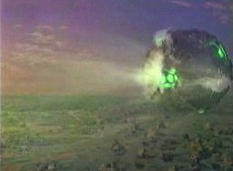

1865-Alfa |
|
||
|  |
Pianeta di classe M, probabilmente del quadrante Delta con almeno due
lune. Nel 2368 un vascello
borg è naufragato sulla sua
superficie. Dell'equipaggio sono sopravvissuti solo quattro droni, tra cui
Sette di Nove.